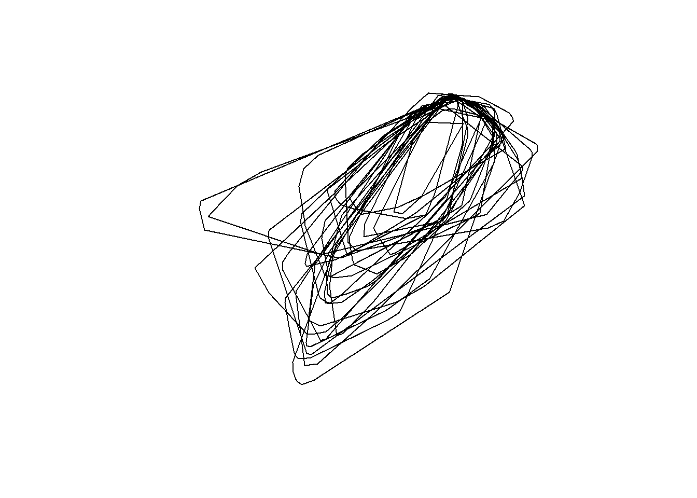
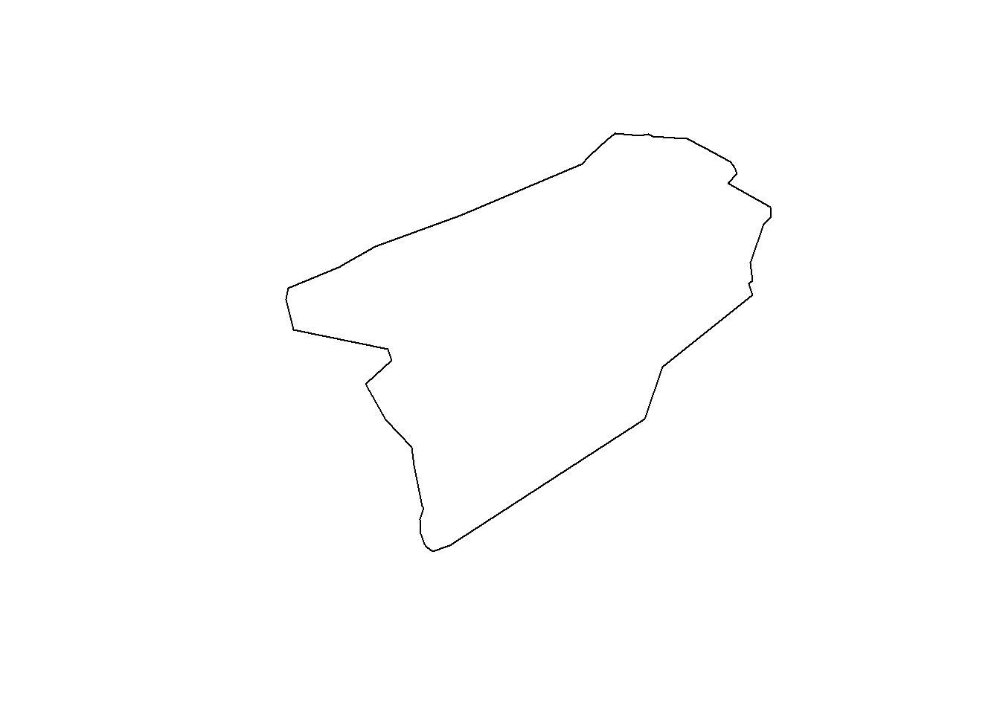
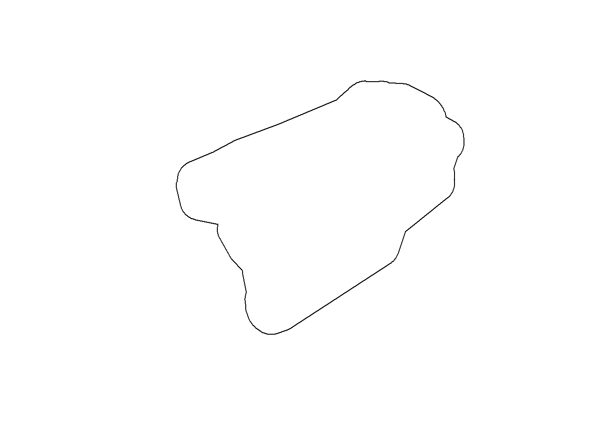

library(sf)
library(tidyverse)
library(adehabitatHR)Create tracks
Introduction
Objectives:
- Create minimum convex polygons for:
- individual caribou
- all caribou (merged individual MCPs + 5km buffer) The second MCP will be used to define the limit of the study region
Read locations and convert to simple features (sf object)
gps <- st_read('../data/yt_caribou.gpkg', 'gps', quiet=TRUE)
glimpse(gps)Rows: 90,864
Columns: 4
$ timestamp <chr> "2020-11-06 19:10:39", "2020-11-07 01:07:00", "2020-11-07 07…
$ ID <int> 43163, 43163, 43163, 43163, 43163, 43163, 43163, 43163, 4316…
$ season <chr> "earlywinter", "earlywinter", "earlywinter", "earlywinter", …
$ geom <POINT [m]> POINT (678102.7 642940.6), POINT (675905.1 636811.4), …Create 100% MCP for each individual
imcp <- NULL # for individual MCPs
mcp <- NULL # for merged MCPs
for (i in unique(gps$ID)) {
cat('Processing', i, '\n'); flush.console()
gps1 <- filter(gps, ID==i) %>%
dplyr::select(ID)
if (nrow(gps1)>=5) {
gps1.sp <- as_Spatial(gps1)
gps1.mcp <- mcp(gps1.sp, percent=100)
mcp1 <- st_as_sf(gps1.mcp)
if (i==gps$ID[1]) {
imcp <- mcp1
mcp <- mcp1
} else {
imcp <- rbind(imcp, mcp1)
mcp <- st_union(mcp, mcp1)
}
}
}Processing 43163
Processing 43150
Processing 43156
Processing 43158
Processing 43145
Processing 43144
Processing 43140
Processing 43148
Processing 43160
Processing 43149
Processing 43159
Processing 43157
Processing 43146
Processing 43155
Processing 43143
Processing 43147
Processing 43153
Processing 43161
Processing 43154
Processing 43142
Processing 43151
Processing 43164
Processing 43152
Processing 43141
Processing 43162 Save individual MCPs
imcp2 <- imcp |>
st_transform(3578)
row.names(imcp2) <- NULL
st_write(imcp2, '../data/yt_caribou.gpkg', 'imcp', delete_layer=TRUE)Deleting layer `imcp' using driver `GPKG'
Writing layer `imcp' to data source `../data/yt_caribou.gpkg' using driver `GPKG'
Writing 25 features with 2 fields and geometry type Polygon.plot(st_geometry(imcp2))
Save merged MCPs
mcp2 <- mcp |>
dplyr::select(id) |>
mutate(id='Population MCP') %>%
st_transform(3578)
row.names(mcp2) <- NULL
st_write(mcp2, '../data/yt_caribou.gpkg', 'mcp', delete_layer=TRUE)Deleting layer `mcp' using driver `GPKG'
Writing layer `mcp' to data source `../data/yt_caribou.gpkg' using driver `GPKG'
Writing 1 features with 1 fields and geometry type Polygon.plot(st_geometry(mcp2))
Buffer merged MCPs by 15km and save
mcp15k <- st_buffer(mcp2, 15000) %>%
mutate(id = 'mcp_buff15k') %>%
st_transform(3578)
st_write(mcp15k, '../data/yt_caribou.gpkg', 'mcp_buff15k', delete_layer=TRUE)Deleting layer `mcp_buff15k' using driver `GPKG'
Writing layer `mcp_buff15k' to data source
`../data/yt_caribou.gpkg' using driver `GPKG'
Writing 1 features with 1 fields and geometry type Polygon.st_layers('../data/yt_caribou.gpkg')Driver: GPKG
Available layers:
layer_name geometry_type features fields crs_name
1 gps Point 90864 3 NAD83 / Yukon Albers
2 gps_vars Point 154182 21 NAD83 / Yukon Albers
3 akcan_10km Multi Polygon 14378 4 NAD83 / Yukon Albers
4 ecozone3_ecoregions Multi Polygon 37 11 NAD83 / Yukon Albers
5 ecozones3 Multi Polygon 3 10 NAD83 / Yukon Albers
6 sbfi_150x150k Multi Polygon 24 3 NAD83 / Yukon Albers
7 sbfi_fdas Multi Polygon 124 1 NAD83 / Yukon Albers
8 imcp Polygon 25 2 NAD83 / Yukon Albers
9 mcp Polygon 1 1 NAD83 / Yukon Albers
10 mcp_buff15k Polygon 1 1 NAD83 / Yukon Albersplot(st_geometry(mcp15k))